Pevné kovové žebříky pro stavby
V roce 2014 byla vydána nová norma ČSN 74 3282 Pevné kovové žebříky pro stavby. Tato norma již řeší kolektivní i individální opatření pro zabezpečení místa výstupu ze žebříku k ochraně proti pádu.
Některé novinky z pohledu BOZP:
- ochranný koš, bezpečnostní koš: ochranná konstrukce z třmenů a pedélných prutů sloužící k omezení rizika pádu ze žebříku a umožňující odpočinek lezoucí osoby,
- nově definuje pohyblivý zachycovač pádu na pevném zajišťovacím vedení, zachycovač pádu,
- štěříny by na výstupu měly být opatřeny snadno uchopitelným madlem,
- hrana výstupní úrovně s nebezpečním pádu se opatří ochranným zábradlím, záchytným systémem dostupným z přístupové plošiny a nezávislým na ostatních systémech (obr. 15a normy) umístěným po obou stranách svislé osy žebříku v délce alespoň 1500 mm,
- přístupová plošina, opatřená po obou stranách ochranným zábradlím, se prodlouží do vzdálenosti 1500 mm od nezabezpečené hrany (obr. 15b normy),
- nášlapná plochy příčlí nebo stupadel má mít protiskluzný povrh.
Ukázka z jedné české střechy:
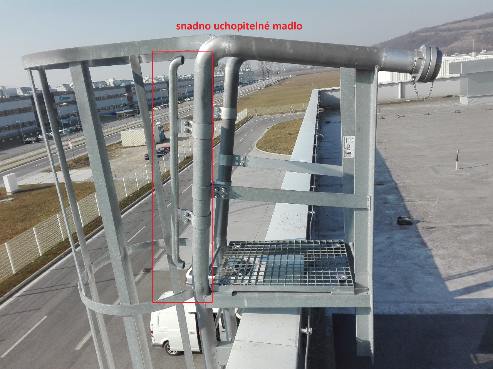
Žebřík doplnění dle požadavků ČSN 74 3282:2014 Pevné kovové žebříky pro stavby, na toto řešení bude navazovat zábradlí, proto je žebřík již osazen brankou:
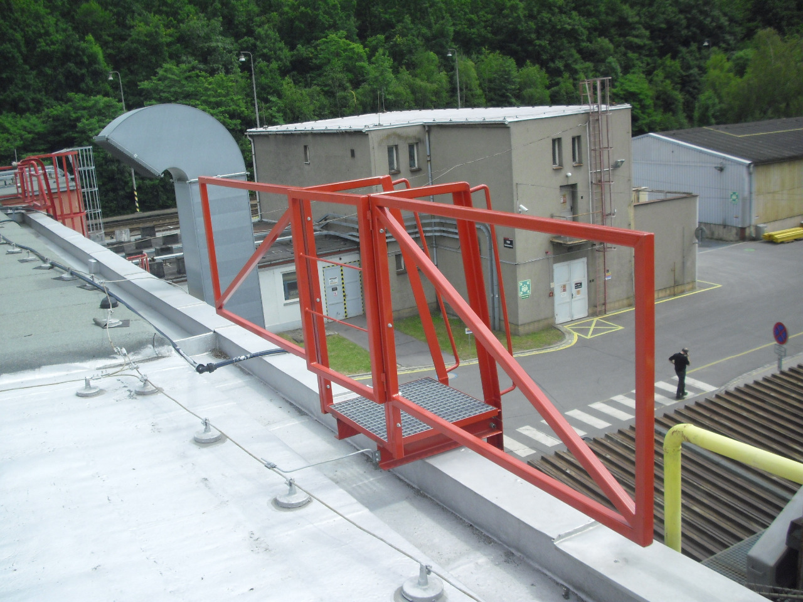
Jedna z možností jak upravit výstup po žebříku - toto řešení je požadováno, pokud ochrana proti pádu navazuje na zábradlí
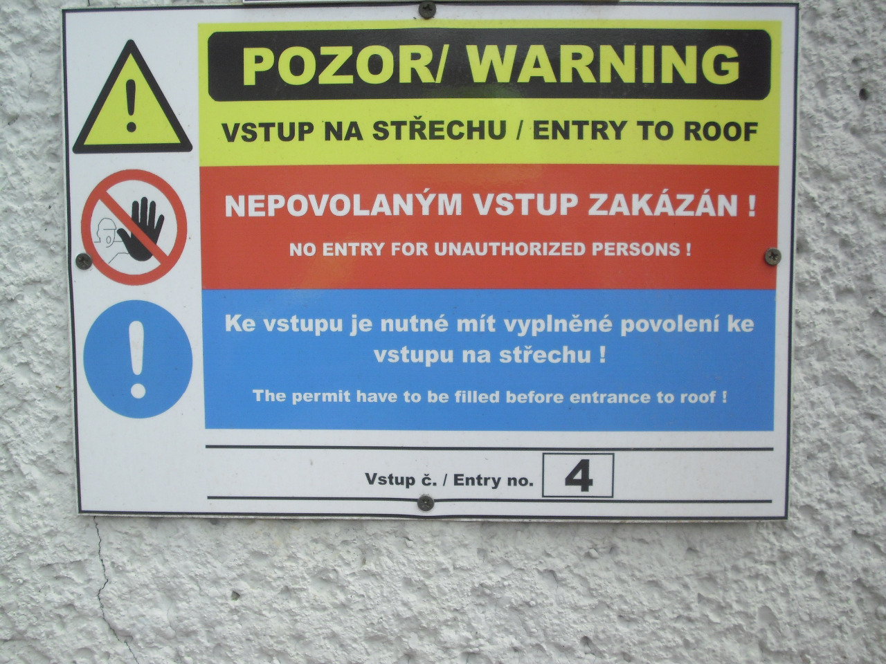
Upozornění na místo určené k přistavení přenosného žebříku
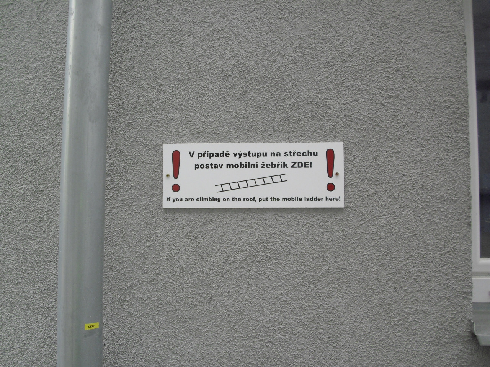
Úprava přístupu na schodiště umístěné v rohu střechy (první schod je cca 1600 mm od volné hrany):
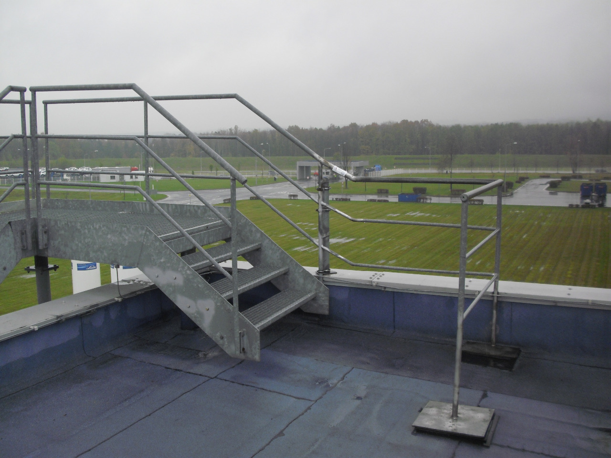
Úprava místa výstupu osazením madel:
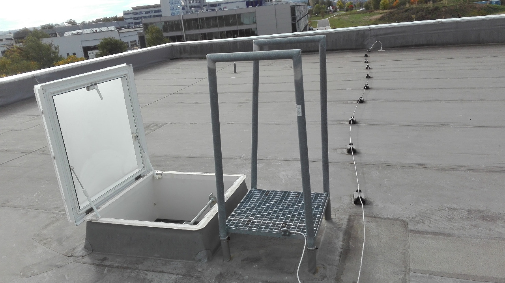
Zde je ukázka několika možných řešení místa výstupu:
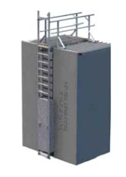
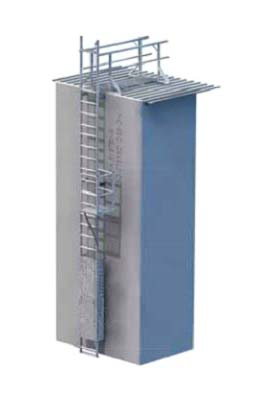
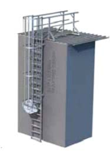
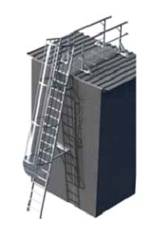
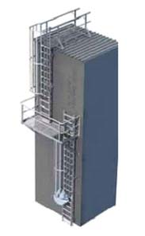
Pracovník po opuštění schodiště je stále na ploše s rizikem pádu a tak musí použít kotvicí bod a použít OOPP:
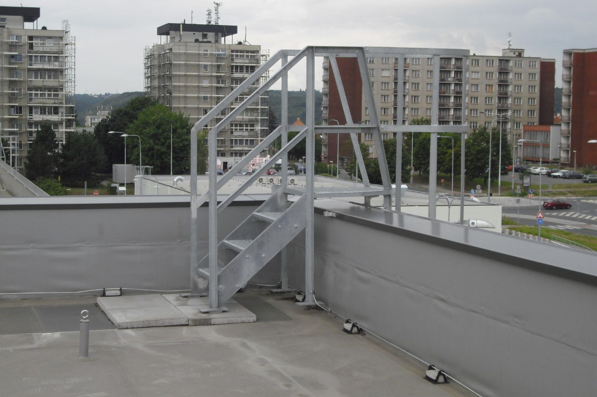
Ohrana před pádem místa výstupu ze žebříku dle ČSN 74 3282:2014 Pevné kovové žebřík pro stavby:
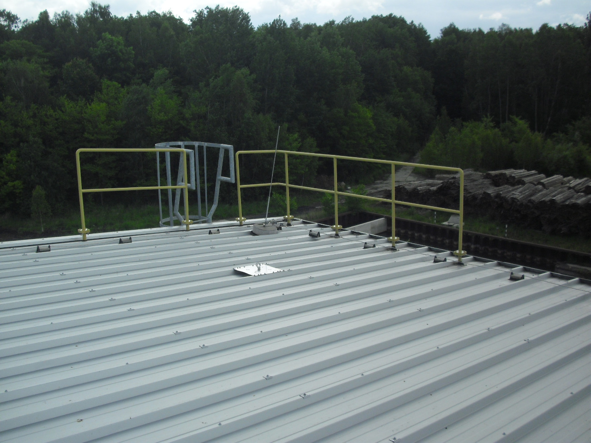